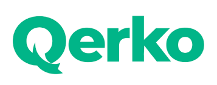
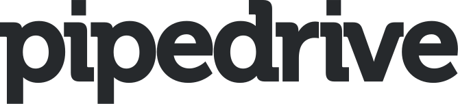
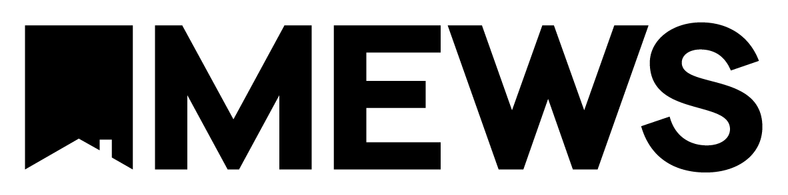
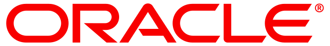
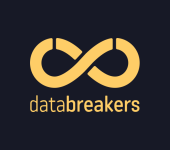
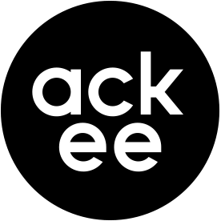
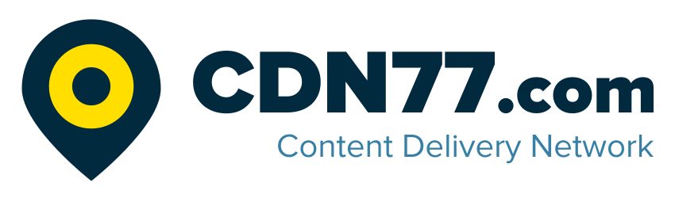
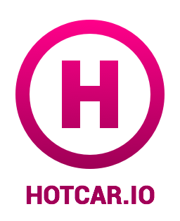

25. června 2024od 18:00SimilarWeb, DOCK, Boudníkova 2538/13, 180 00 Praha 8, Dock in Five
10 min
Backendisti #14 – Intro
40 min
Testing story in times of monolith decomposition (k8s)
Outreach story about testing its platform during monolith decomposition. What should you test on the independent services level? Should you run E2E tests in the local k8s cluster? Should e2e tests run from inside of the cluster or from outside? Marek will share lessons learned on this path.
Marek Fexa, Staff Software Engineer @ Outreach
30 min
The only constant in a startup is change
Development in a startup is always a challenge and change lurks around every corner. I'll walk you through a brief history of development at Digitoo and the changes we've encountered along the way - from the small changes in automation to the breaking changes in APIs and approach to integrations.
API Stability: Don’t Break Your Users!
Have you ever feared to upgrade a tool or a library you depend on? Did you know that there are many Windows programs that can run unchanged straight from the 90s? Why can't the opensource project you're using keep an API for two years?
What is the magical sauce for API compatibility and why some companies can do it and some tools just break your code on every upgrade? I'll show you examples from several open-source projects - some positive, some frustrating.
In the end, we'll go through strategies you may use to keep your APIs compatible as your product evolves.
Networking
V průběhu celé akce a hlavně po ní se můžete občerstvovat jídlem (grilování na terase) a pitím, které pro vás obstaral Outreach.
😉
Backendisti #13
8. srpna 2023od 18:30Showmax, Bucharova 2657/12 Praha 13, 15800
10 min
Backendisti #13 – Intro
40 min
Varnish is not a database... Or is it? 👀
Varnish nám v Showmaxu pomáhá udržet stabilní platformu i přes velmi rychlé nárůsty počtu requestů kvůli live sportům.
Ale co dělat, když jsou requesty tak variabilní, že i přes cachování requestů je API přestává stíhat odbavovat? Ukážeme vám jak jsme tento problém vyřešili na našem Catalogue API, kde přidání další vrstvy komplexity a cachování mezivýsledků nám pomohlo přežít špičky requestů při World Cupu a dokonce i něco ušetřit.
Ondřej Šodek, Senior Software Engineer @ Showmax
30 min
All the Buzzwords: A Productboard journey
DDD, CQRS, DRY, Git flow, microservices, monorepos ... svět technologií nikdy nespí a za každým rohem se skrývá nový hype. Jak jsme se s tím u nás vypořádávali v čase? Jaké chyby jsme udělali? Co bychom dnes udělali jinak? V tomto talku se budu snažit předat praktické i teoretické rady na základě dlouholeté zkušenosti s vývojem unicorn startupu.
Tomáš Růžička, Productboard
30 min
evitaDB rychlá databáze pro e-commerce
Doménově specifické databáze nabízejí vývojářům řadu výhod, které databáze s obecným zaměření nabídnout nemohou. Cílem evitaDB je pokrýt požadavky projektů v e-commerce a nabídnout vývojářům takové API, které bude pokrývat všechny základní potřeby v této oblasti, v takové formě, jakou jsou zvyklí konzumovat (GraphQL, REST, gRPC, nativní Java a C#). Kromě úspory času vývojářů cílí také na vysokou propustnost a nízkou latenci komplexních dotazů díky práci s in-memory indexy. Pojďme si ukázat jak takové API vypadá, jak vypadá dotazovací jazyk, jak si databázi lokálně za pár vteřin rozjedete a v čem vám může pomoci.
Networking
V průběhu celé akce a hlavně po ní se můžete občerstvovat jídlem a pitím, které pro vás obstaral Showmax.
😉
Backendisti #12
24. dubna 2023od 18:30Make, Dock in Five Recepce B, 6. patro, Menclova 2538/2, Praha
10 min
Backendisti #12 – Intro
40 min
Co kdyby zmizela otázka "Dohromady, nebo zvlášť?", aneb cesta od nápadu ke Qerku
Formou příběhu se dozvíte jak to s Qerkem bylo. Zaměřím se na technické výzvy, které jsme řešili, a chyby, které se po cestě staly, abyste je už nemuseli udělat. Budeme se také zabývat naším přístupem k růstu a rozvoji, včetně naší kultury a hodnot, které nám pomohly vybudovat Qerko.
Miloslav Mrvík, Co-Founder & CTO @ Qerko

30 min
How Twisto Transformed its CI/CD Process and Boosted Efficiency with Internal Tooling
Evoluce CI/CD v Twistu aneb trocha historie. Jak jsme se na začátku nebáli experimentovat a použít vlastní řešení Continuous Deploymentu. Z našeho úsilí nakonec vzešel twisto-toolbelt nástroj usnadňující každodenní práci vývojářům. Tento nástroj jsme v průběhu let rozvíjeli, zdokonalovali a přidávali další užitečné komponenty. Například "Testservers", pomocí něhož lze velmi jednoduše zprovoznit testovací prostředí v Kubernetes clusteru nebo modul "SnapshotAPI", který na jeden příkaz spustí testovací databázi na vzdáleném serveru.
Jiří Polanský, DevOps Engineer @ Twisto
30 min
Let's talk about the Elephant in the Room
PostgreSQL je databáze, se kterou se dá začít doslova na pár kliknutí. Během vývoje děláme mnoho rozhodnutí, jejichž dopad není mnohokrát zřejmý až do doby, než se něco pokazí. Průlet naší jedenáctileté společné cesty s jednou z nejrozšířenějších open-souce relačních databází. Scaling, modelling, best practices, lessons learned, fuckups.
Patrik Šimek, CTO @ Make
2 hod
Networking
V průběhu celé akce a hlavně po ní se můžete občerstvovat jídlem a pitím, které pro vás obstaral Make.
😉
Backendisti #11 [en]
16. January 202018:00 - ?JetBrains, Kavčí Hory Office Park Na hřebenech II 1718/10 140 00 Praha 4 - Nusle
This event will be entirely in English
10 min
Backendisti #11 – Intro
40 min
Simplifying complex code using Domain-Driven Design
This will be a practical presentation about how to use DDD to improve large codebases solving complex business problems. The purpose and basic concepts of DDD will be explained at first. Then we will move on to examples of how we applied those concepts to our existing TypeScript services at Pipedrive.
Jakub Kadlubiec

40 min
Programming hardware: from zero to custom PCBs
In today’s world, we’re used to testing our code almost instantly, sometimes even after writing just one line of code. Developing and programming hardware is still different in this perspective because, in most cases, you have to compile and flash the code before execution. Strangely enough, it brings significant relief to the whole development process because it forces you to pause for a while and think.
I started playing with IoT projects a few years ago without any knowledge about hardware, and mostly through experimenting, I was able to learn how to design custom projects, including printed circuit boards. By utilizing a self-made reflow oven and 3D printed enclosures, I can make the projects look (almost) like factory-made and even produce them in batch. Have you ever wondered how to automate existing appliances at the office or home? Easy! In this talk, I’d like to show you how you can start yourself and what challenges you’d most likely encounter during the learning process.
Viktor Stískala
30 min
Automated zero-downtime migrations
Mews is used by hotels all over the world in various time zones leaving us with no room for maintenance downtime. This fact and our aim for continuous deployment left us no other choice than zero downtime deployments, as having even short outages is obviously not an option. However, these non-breaking migrations are executed manually in most companies and are not controlled by any other factor than developers also manually. We will show how we managed to automate and control them in such a way that developers don’t need to care about schema migrations and can rest assured their changes won’t cause any trouble.
Josef Starýchfojtů

2 hrs
Networking
During the whole event and especially after it you can refresh yourself with draft beer, soft drinks and food provided by JetBrains.
Backendisti #10
23. ledna 2019od 18:00Socialbakers Pernerova 676/53 186 00 Praha 8 – Karlín
10 min
Backendisti #10 – Intro
50 min
How we processed millions of designs in 2018
With Avocode, our users are able to inspect design files without the actual design software like Photoshop. This required creating an infrastructure that is able to parse and render all the formats as fast and reliable as possible. This talk will be a short overview of our backend infrastructure and how we leveraged technologies like Kubernetes and Helm, Django, Emscripten and Grafana.
Tomáš Rychlik
30 min
Let your open-source projects live in the cloud
In this talk, I will show how you can give your open-source projects a live presence in the cloud using Apify Actors - a new serverless computing platform for jobs that are longer than a lifetime of a single HTTP transaction. Once you build and publish an actor, anyone can start using it straight away without a need to install or setup anything on their own infrastructure. And you don’t need to pay a penny for the cloud hosting.
Jan Čurn
30 min
Mesos in production
In Socialbakers we use Mesos and its ecosystem (Marathon, Singularity, MLB) to run and manage our microservices architecture — which now consists of approx. 400 apps in total of 1000 instances (processes). You will get insight into our setup of the cluster, tips and ways we had to reveal ourselves to have smooth production environment. Also, I will share some of the fuckups that happened to us when using this software.
Martin Bydžovský
2 hod
Networking
V průběhu celé akce a hlavně po ní se můžete občerstvovat točeným pivem, nealkem a jídlem, které pro vás obstarali Socialbakers. 😉
Backendisti #9
18. října 2018od 18:00Slevomat.cz Pernerova 691/42 186 00 Praha 8 – Karlín
10 min
Backendisti #9 – Intro
50 min
Kotlin DSL in under an hour
Learn how to create type-safe and statically typed DSLs in Kotlin. Uncover the language features that makes DSL creation possible. We’ll take a look at a few practical examples and create a simple DSL ourselves.
The session starts with an introduction to DSL related Kotlin language features. Next, we create a simple DSL in a live coding session and then continue adding expressiveness and language features. We cover a number of examples, like JSON or XML builder’s, data binding, configuration & template engines. As a bonus, if time permits, we’ll take a look at Kotlin DSL example in TeamCity continuous integration server.
Anton Arhipov
20 min
Udržitelný vývoj na AWS Lambda s TypeScriptem a Serverless frameworkem
Na AWS Lambda lze provozovat jednoduché utility, ale i rozsáhlejší komplexní aplikace. Ukážeme si, jak se neutopit v technickém dluhu po jednom odpoledni a jak se dá pohodlně vyvíjet, když vám neustále pomáhají silné typy a kompilátor. Řekneme si i řadu dalších tipů, které vám usnadní váš život s Lambdou.
Ondřej Mirtes
30 min
Navrhněte webové API rovnou pořádně
Dobré API je důležité. Co by ovšem mělo dobré API obsahovat a jak by mělo vypadat? Musí být dobře dokumentované, efektivní, konzistentní a také umět dostatečné množství věcí. Povím vám o zkušenostech z návrhu API pro FlexiBee, které používají stovky vývojářů v ČR a naopak o konzumaci stovek API v Dativery.
Petr Ferschmann
2 hod
Networking
V průběhu celé akce a hlavně po ní se můžete občerstvovat točeným pivem a nealkem, které pro vás obstaral Slevomat.
😉
Backendisti #8
21. února 2018od 18:00Oracle U Trezorky 921/2 158 00 Praha 5
10 min
Backendisti #8 – Intro
50 min
API gateway brána do světa microservice
Jeden z problémů při přechodu na architekturu mikroslužeb představuje chytré směrování požadavků na jednotlivé služby. Z nepřeberného množství jsme se rozhodli inspirovat Netflixem a postavili naší API gateway nad technologiemi Netflix Zuul či Spring boot. V této prezentaci si představíme celou infrastrukturu, kterou API gateway a ekosystém mikroslužeb používá, od monitoringu, přes administrační rozhraní až po runtime změny konfigurace. Dále si ukážeme, jak API gateway umožňuje vystavovat use case orientovaná API např. pro mobilní zařízení včetně jejich dokumentace a testů.
Lukáš Nový, Dominik Moštek
30 min
Analýza a generování textů v přirozeném jazyce
Geneea se věnuje vývoji vlastních systémů pro analýzu textů v přirozeném jazyce (NLP) a pro generování textů ze strukturovaných dat (NLG). V přednášce vysvětlíme stručně základní funkce zpracování přirozeného jazyka. Nahlédneme pod pokličku, jak jsme vytvářeli textově analytickou platformu, jak jí trénujeme, testujeme a jakou používáme infrastrukturu.
Jirka Hana, Petr Hamerník
20 min
Oracle Cloud Platform
Oracle už dávno není jen databáze. Seznamte se s Oracle Cloudem, který nabízí kompletní cloudové portfolio IaaS, SaaS a pestrou škálu platformních služeb. Prakticky si ukážeme Oracle IoT Cloud Service. Tato služba umožňuje připojení k libovolnému zařízení generujícímu data, v reálném čase data analyzovat a na tomto základě vytvářet předpovědi dalšího vývoje. Díky tomu lze rozšířit funkcionalitu podnikových procesů a rychle vytvářet aplikace IoT, které zahrnují např. preventivní údržbu zařízení nebo sledování majetku.
Jaroslav Novotný, Vít Nohejl

2 hod
Networking
V průběhu celé akce a hlavně po ní se můžete občerstvovat jak točeným pivem, tak i jídlem, které pro vás obstaral Oracle
😉
Backendisti #7
24. října 2017od 18:00Microsoft Vyskočilova 1561/4a 140 00 Praha 4
10 min
Backendisti #7 – Intro
50 min
GDPR strašidlo
Backendista a právník se společně dopátrají toho, co vlastně GDPR pro backendisty v praxi znamená a na co si dát pozor. Přednáška bude formou diskuze, takže nezáživnou právničinu nečekejte.
30 min
Prometheus & White box monitoring
Monitorovat celou infrastrukturu je v dnešní době microservices čím dál větší výzva, ale může nás leckdy zachránit před fatálním problémem. V dnešní době je stále ještě zvykem používat black box monitoring, a to i v případě, že máme inhouse vývoj, přičemž bychom mohli napojit naše aplikace přímo a monitorovat je zevnitř pomocí tzv. white box monitoringu. Dozvíte se, jak něco takového udělat pomocí Promethea, který je navržen podle interního nástroje Borgmon vyvinutého v Googlu.
Zdeněk Hásek
20 min
Koncept NoSQL v Azure Cosmos DB
Trendem poslední doby v architektuře moderních informačních systémů je snaha o odbourání limitů relačních databází a také snaha o nalezení větší volnosti při ukládání a následné analýze dat. Azure Cosmos DB poskytuje celou škálu možností pro využití NoSQL konceptu. V krátkém přehledu se podíváme na možnosti některých z nich.
Vladimír Mužný
2 hod
Networking
V průběhu celé akce a hlavně po ní se můžete občerstvovat jak pivem, tak i jídlem, které pro vás obstaral Microsoft
😉
Backendisti #6
19. června 2017od 18:00Kino Aero Biskupcova 1733/31 130 00 Praha 3
10 min
Backendisti #6 – Intro
50 min
Jak spočítat všechny auta na světě pomocí satelitů, neuronek a Google Cloudu
Každý den povrch země vyfotí stovky satelitů, čímž vygenerují obrovské množství obrazových dat skrývajících cenné informace. Ukážeme, jak lze pomocí neuronových sítí tyto informace vytáhnout a jak to díky Google Cloud Platformě dělat on-line a ve velkém.
Matěj Laitl
20 min
Next.js
Javascript na serveru není žádná novinka, REST API endpoint postavený na Express je dnes už klasika. Co když ale chcete v JS napsat kompletní web? Musíte vyřešit HTML render, templates, routing, authentizaci, boundle spliting, SEO atd. Framework Next.js tyto potřeby řeší tak elegantně, že bude čas ukázat i deployment a hosting.
Michal Sänger
20 min
Příběh platformy pohánějící IBM Weather Company
Meteorologická data jsou jedním z největších a nejvíce měnících datasetů na Zemi. Jako jeden z největších poskytovatelů dat o atmosféře a počasí, produkuje Weather company pro 2,2 miliardy lokalit, každou minutu aktualizaci stavu, každých 15 minut předpověď a denně obslouží 26 miliard dotazů. Kromě vlastních datových zdrojů, přijímá denně 100 TB externích dat z radarů, satelitů, letadel, osobních meteostanic, a mobilních telefonů. Zpracování dat o počasí je krásná IoT a BigData úloha. Seznamte se s příběhem, který začal 13 přeplněnými datacentry a vedl k vzniku cloud-native služby “IBM Watson Data Platorm” poháněnou kombinací opensource technologií, kterou IBM nabízí svým zákazníkům jako univerzální analytickou platformu.
Jindřich Kasal, IBM Analytics
Networking
V průběhu celé akce a hlavně po ní se můžete občerstvovat jak pivem, tak i skvělými signature drinky v Aero baru. A pár drinků za Vás zaplatí
Kiwi.com 😉
Backendisti #5
5. dubna 2017od 18:00Ackee s.r.o. Karolinská 650/1 186 00, Praha 8
10 min
Backendisti #5 – Intro
30 min
Do it yourself IoT
Doma se mi žaluzie automaticky zatahují po západu slunce, můžu je ovládat i z telefonu a vstupní mříž do kanceláře otevíráme přes Slack command. Obě zařízení byly původně zcela offline. Jak si podobné ovládání a mnoho dalšího můžete udělat doma o víkendu, skoro zdarma a ještě téměř bez znalostí elektrotechniky? O tom si povíme v této krátké přednášce.
Viktor Stískala
20 min
Cloud infrastruktura v DataBreakers
Jak jsme v DataBreakers vybudovali cloud container-based infrastrukturu s využitím DC/OS od Apache za zlomek ceny jiných řešení. Jak celé toto řešení funguje s big data a machine learning technologiemi a jaké výhody Vám použití podobného řešení může přinést.
Tomáš Kurinec

20 min
Evoluce asynchronního Javascriptu v Node.js
Jirka nám poví o osvědčených postupech, které zjednodušují práci s asynchronními operacemi a pomohou odbourat tzv. "callback-hell", i o novinkách, které v této oblasti přináší ES7
Jiří Šmolík

2 h
Networking
Backendisti #4
8. února 2017od 18:00Česká spořitelna Antala Staška 32 140 00 Praha 4-Krč
10 min
Backendisti #4 – Intro
45 min
GoodData Compute Fabric: Jak řídíme miliony jobů přes stovky serverů
Backendisti z GoodData nám předvedou, jak distribuují a řídí úlohy napříč servery a datacentry pomocí svého interního nástroje. Idempotence, high-availability, řešení závislostí, ... něco jako "MQ + workflow + steroidy = GoodData Compute Fabric". Náhled pod pokličku zaručen!
Ondřej Černoš, Luboš Veselý, Jan Chochol
20 min
Jak jsem naučil neuronovou síť hrát Atari hry
Khanh Chuong Le nám ukáže temnou vizi budoucnosti. Stroje si budou hrát, zatímco my je budeme programovat pomocí Pythonu a Theano.
Khanh Chuong Le
20 min
Jak si vyrobit mikroslužby – výběr architektury a provozní platformy
Vyprávění, jak si lze udělat vlastní mikroslužby se Spring Cloudem. Když dva dělají totéž není to totéž - existuje více způsobů jak mikroslužby navrhnout a jak je provozovat. Důležité je si položit otázku, proč vlastně mikroslužby chci. Povím jak se mikroslužby liší od klasické aplikace, jaké různé architektury jsou, jak postavit prostředí, jak souvisí mikroslužby s cloudem, jak služby organizovat a na co je třeba dát si pozor, protože to není jen o technologiích a jak jsme začali se Spring Cloudem.
Radek Duží
2 h
Networking
Můžete se těšit na skvělé občerstvení, nealko i a pivo z minipivovaru Kácov.
Backendisti #3
7. prosince 2016od 18:00Avast Software Enterprise Office Center – 7. patro Pikrtova 1737/1A 140 00 Prague 4
5 min
Backendisti #3 – Intro
40 min
Jak zvládá Kiwi.com miliardy zápisů do databáze denně?
V přednášce se podíváme více do detailu na celou architekturu databází Kiwi.com. Podíváme se na to, jak používají PostgreSQL, BigQuery, Hive & Presto a další nástroje.
Jozef Képesi
30 min
WebRTC internet delivery & P2P backend internetu
Kam smeřuje P2P video delivery, jaké možnosti a co vše lze dnes posílat mezi uživateli, instantně v browseru a proč tento typ obsluhy videa na internetu
má své praktické místo.
Přednáška ukáže kontext a černá místa internetu, které P2P WebRTC řeší.
Zdeněk Cendra

20 min
Flexibilní Big Data Infrastruktura
Big Data systémy typicky sbírají data z více různých zdrojů, které v průběhu času přibývají a vyvíjejí se. Neštastným, ale poměrně častým jevem je
implementace separátních datových toků, jež dříve či později končí duplikací kódu, infrastruktury a práce.
V Avastu jsme dokonvergovali k poměrně univerzálnímu a velmi automatizovanému systému pro sběr a analýzu dat, kde přidání nového zdroje spočívá pouze v
definici vstupního formátu a několika konfiguračních parametrů. Veškerá data jsou efektivně uložená, dotazovatelná a zpracovatelná homogením způsobem.
Hlavními stavebními prvky jsou Apache Kafka a Apache Hadoop, datové toky dosahují 40 000 událostí/s resp. 20 MB/s.
Na přednášce ukážeme, jak jsme toto řešení realisovali na straně příjmu dat, jejich zpracování a uložení při zachování žádoucích vlastností jako je spolehlivost příjmu dat a horizontální škálovatelnost.
Vojtěch Tůma
2 h
Networking
Backendisti #2 [en]
24th October 201618:00–20:30STRV, Praha 8, Rohanské nábřeží 678/23
This event was entirely in English
5 min
Backendisti #2 – Intro
50 min
Building backends for Mobile in Google Cloud Platform
Jerry is a long-time systems engineer who has worked with a variety of technologies, both as an employee and an entrepreneur in many business areas. His passions include (but are not limited to) security, cloud computing, containers, microservices, (mobile) backends, and big data analytics. He is currently working with multiple programming languages and frameworks, and is always on the lookout for the "next big thing".
Jerry Jalava
20 min
Application Diagnostics in Microsoft Azure
Do you really want to have your application under the control? You should! Microsoft Azure offers many useful tools, features and great Application Insights service which provide perfect health overview of your application, information about performance, exceptions and availability.
Miroslav Holec
15 min
REST API is dead. Long live GraphQL
REST became de-facto standard for APIs. But today it stops to be the best choice as API for user interface. Facebook offered us GraphQL and wonderful library Relay. Relay makes working with data in apps much easier and also faster.
Petr Ferschmann
3 h
Networking
Networking session and free beer in STRV's rooftop bar Scrollbar
Backendisti #1
16. června 201618:00–20:30Node5, Praha 5 Radlická 180/50
5 minut
Backendisti #1 – Úvod
40 minut
Na čem jedou v Keboole?
Ukážeme si jak vypadá architektura datové platformy Keboola Connection, jakým způsobem jí spravujeme a monitorujeme. Jak se během posledních čtyř let vyvíjela, co nás čeká dál, jakým způsobem a proč míříme do její kontejnerizace? Povíme si o VPC, IAM, Autoscaling, Cloudformation, Lambda a dalších službách které (ne)využíváme. Jako bonus sladkokyselé zkušenosti se supportem.
Martin Halamíček
10 minut
Hlavně rychle a levně aneb cloud pro socky
Vývoj, nasazení a provoz webových aplikací stojí spoustu času a peněz. Obzvláště pokud jste dost šílení a uvažujete o vlastním hardwaru, server housingu, operations a podobných reliktech z dob raných devadesátek. Nota bene pokud permanentně čelíte riziku, že produkt nebude úspěšný nebo ho budete potřebovat rychle změnit. Nejenom projekt HotCar.io mě naučil efektivně a levně používat AWS. V pár minutách vám ukážu jak na to.
Roman Pichlík

10 minut
Přechod z monolitu na servisní architekturu
Ve společnosti ROI Hunter postupně převádíme naši aplikaci z monolitické architektury na mikroslužby.
Některé mikroslužby jsou již funkční, na dalších stále pracujeme.
Zmíníme, proč jsme se rozhodli přejít na mikroslužby, zda se nám již vrátila časová
investice do vývoje mikroslužeb, co se zdařilo a co by bylo lepší provést jinak.
Samozřejmě se nevyhneme technologiím, které u nás používáme - jde zejména o Javu, Spring (resp.
na mikroslužbách hlavně Spring Boot), Python, Hibernate, Postgres, MongoDB, RabbitMQ, Docker, Redis a Node.js.
Josef Hertl
10 minut
Docker a Kubernetes jsou bájo
V Bayo, služba pro C2C prodej a nákup, potřebujeme rychle zkoušet nové věci, rychle je nasazovat a škálovat, když budou fungovat, a rychle je zahazovat, když fungovat nebudou. Docker, Kubernetes a AWS jsou skvělá kombinace, jak toho docílit. Krátký vhled do toho, jak řešíme lokální vývoj pomocí Dockeru a nasazování do cloudu přes Kubernetes.
Jakub Kulhan